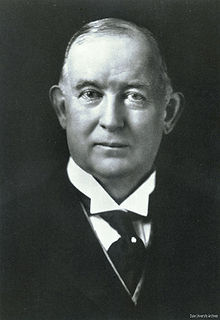

James Buchanan Duke, known by the nickname "Buck", was born on December 23, 1856, near Durham, North Carolina, to industrialist and philanthropist Washington Duke and his second wife, Artelia Roney Duke.
Washington Duke (1820–1905), had owned a tobacco company that his sons James Buchanan Duke and Benjamin Newton Duke (1855–1929) took over in the 1880s. In 1885, James Buchanan Duke acquired a license to use the first automated cigarette making machine (invented by James Albert Bonsack), and by 1890, Duke supplied 40% of the American cigarette market (then known as pre-rolled tobacco). In that year, Duke consolidated control of his four major competitors under one corporate entity, the American Tobacco Company, which was a monopoly in the American cigarette market. His robber baron business tactics directly led to the Black Patch Tobacco Wars in 1906-1908.
At the start of the 1900s, Duke tried to conquer the British market as he had done the American, eventually forcing the then divided British manufacturers to merge into the Imperial Tobacco Company of Great Britain and Ireland, Ltd (Imperial Tobacco). After two years of intense competition in Great Britain, Imperial Tobacco took the fight to the U.S. market, forcing American Tobacco to look for a settlement. This resulted in an agreement whereby American Tobacco controlled the American trade, Imperial Tobacco controlled the trade in the British territories, and a third, cooperative venture named the British-American Tobacco Company was set up between the two to control the sale of tobacco in the rest of the world. During this time, Duke was repeatedly sued by business partners and shareholders. In 1906, the American Tobacco Company was found guilty of antitrust violations, and was ordered to be split into four separate companies: American Tobacco Company, Liggett and Myers, R.J. Reynolds, and the P. Lorillard Company.
In 1892, the Dukes opened their first textile firm in Durham, North Carolina, that was run by Benjamin Duke. At the turn of the century, Buck Duke organized the American Development Company to acquire land and water rights on the Catawba River. In 1904, he established the Catawba Power Company and the following year he and his brother founded the Southern Power Company, which became known as Duke Power, the precursor to the Duke Energy conglomerate. The company supplied electrical power to the Duke's textile factory and within two decades, their power facilities had been greatly expanded and they were supplying electricity to more than 300 cotton mills and other industrial companies. Duke Power established an electrical grid that supplied cities and towns in the Piedmont Region of North and South Carolina. Lake James, a power-generating reservoir in Western North Carolina, was created by the company in 1928 and named in Duke's honor. Buck Steam Station in Rowan County, North Carolina, built in 1926, is also named for Duke.
In 1911, the U.S. Supreme Court upheld an order breaking up the American Tobacco Company's monopoly. The company was then divided into several smaller enterprises, of which only the British-American Tobacco Company remained in Duke's control. After his death in 1925, there was a great deal of controversy, and some historians suspect that some resentful Imperial Tobacco executives were feeling some anger at Duke for having lost the Tobacco War between Duke's company and Imperial Tobacco.
Duke was married twice, first in 1904 to Lillian Fletcher McCredy. They divorced in 1906 and had no children. In 1907 he married the widow Nanaline Holt Inman, with whom he had his only child, a daughter, Doris, born November 22, 1912. Doris was raised at Duke Farms located in Hillsborough, New Jersey, where her father had worked with landscapers such as James Leal Greenleaf (a member of the firm of Frederick Law Olmsted), and Horatio Buckenham to transform more an 2,000 acres of farmland and woodlots into an extraordinary landscape containing 2 conservatories, 9 lakes, 35 fountains, 45 buildings, countless pieces of sculpture, over 2 miles (3 km) of stone walls and more than 18 miles (29 km) of roadway.Duke died in New York City on October 10, 1925, and is interred with his father and brother in the Memorial Chapel on the campus of Duke University. He resided at the James Buchanan Duke House in Charlotte, North Carolina during the last five years of his life. It was listed on the National Register of Historic Places in 1978.